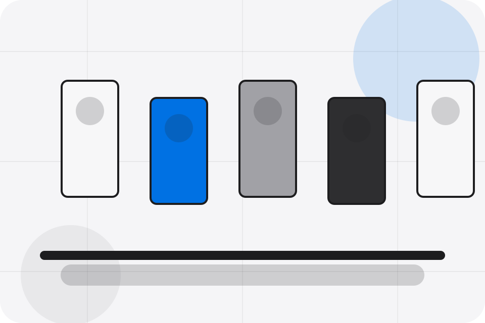
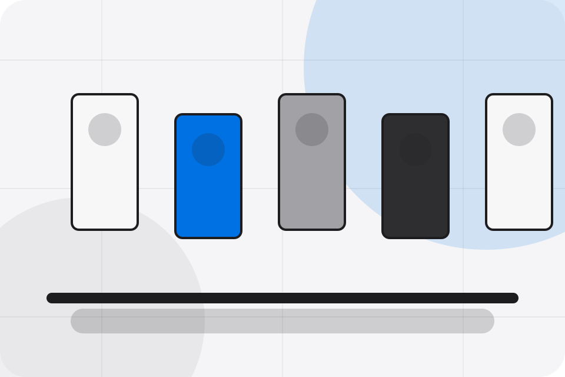

Contact / 01
Contact by Corner
Contact shaped for retail, shops & consumer sales decisions.
Contact opens as a clear retail decision hub: what Corner offers, who it helps, why it matters, and which route to take first.
The first screen combines positioning, proof, primary action, and fast internal navigation, so people can act immediately or compare the rest of the contact route with context.
Browse quicklyCompare clearlyAsk availability
Soft product shelf hero
Filter the catalogue
Select the closest route and Corner keeps the next step, proof, and follow-up expectation aligned with convenience and offer discovery.

Contact / 02
Store
Store makes the contact path concrete: what to send, how the response works, and what Corner needs before visitors visit the shop.
The section reduces contact friction by naming the channel, expected detail, privacy path, and response expectation instead of dropping visitors into a generic form.
Visit ShopDetails
What information helps Corner respond with a useful answer instead of a generic reply.
Contact / 03
Online
Online makes the contact path concrete: what to send, how the response works, and what Corner needs before visitors visit the shop.
The section reduces contact friction by naming the channel, expected detail, privacy path, and response expectation instead of dropping visitors into a generic form.
Visit ShopDetails
What information helps Corner respond with a useful answer instead of a generic reply.
Timing
How the visitor should think about response, urgency, location, or availability.
Reply
The expected next message keeps scope, timing, and the first practical step clear.
Contact / 04
Wholesale
Wholesale makes the contact path concrete: what to send, how the response works, and what Corner needs before visitors visit the shop.
The section reduces contact friction by naming the channel, expected detail, privacy path, and response expectation instead of dropping visitors into a generic form.
Visit Shop- 01
Details
What information helps Corner respond with a useful answer instead of a generic reply.
- 02
Timing
How the visitor should think about response, urgency, location, or availability.
- 03
Reply
The expected next message keeps scope, timing, and the first practical step clear.
Contact / 05
Phone
Phone makes the contact path concrete: what to send, how the response works, and what Corner needs before visitors visit the shop.
The section reduces contact friction by naming the channel, expected detail, privacy path, and response expectation instead of dropping visitors into a generic form.
Visit ShopCorner keeps phone practical: send the key details, choose the right contact route, and know what kind of reply to expect.
Visit ShopContact / 07
Map
Map makes the contact path concrete: what to send, how the response works, and what Corner needs before visitors visit the shop.
The section reduces contact friction by naming the channel, expected detail, privacy path, and response expectation instead of dropping visitors into a generic form.
Visit ShopDetails
What information helps Corner respond with a useful answer instead of a generic reply.
Timing
How the visitor should think about response, urgency, location, or availability.
Reply
The expected next message keeps scope, timing, and the first practical step clear.
Contact / 08
Hours
Hours makes the contact path concrete: what to send, how the response works, and what Corner needs before visitors visit the shop.
The section reduces contact friction by naming the channel, expected detail, privacy path, and response expectation instead of dropping visitors into a generic form.
Visit ShopWhat information helps Corner respond with a useful answer instead of a generic reply.
How the visitor should think about response, urgency, location, or availability.
The expected next message keeps scope, timing, and the first practical step clear.
Contact / 09
Submit
Submit makes the contact path concrete: what to send, how the response works, and what Corner needs before visitors visit the shop.
The section reduces contact friction by naming the channel, expected detail, privacy path, and response expectation instead of dropping visitors into a generic form.
Visit Shop- 01
Details
What information helps Corner respond with a useful answer instead of a generic reply.
- 02
Timing
How the visitor should think about response, urgency, location, or availability.
- 03
Reply
The expected next message keeps scope, timing, and the first practical step clear.
Contact / 10
Visit Shop
Corner closes the contact route with a clear action, a quick reminder of the value, and a low-friction way to visit the shop.
Visitors who are ready can use the primary action. Visitors who are still comparing can scan the section links, proof, and support routes before they visit the shop.
Visit ShopThe final block keeps the choice simple: act now, compare one more proof route, or send enough detail for a focused response.
Visit Shop
convenience and offer discovery
Visit Shop
A retail shopfront with clean product shelves, rounded offer cards, service proof, and store-finder CTAs. Contact ends with a direct path to visit the shop, plus enough context for visitors who still need to compare.
Notes
Information is provided for planning and should be reviewed for the final client, location, and operating rules.